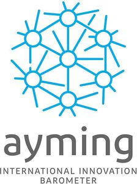

Trade Mark Journal No.2026/007 13 February 2026
WO0000001888264 (9,16,35,38,41,42,45)
Office of origin: France
Date of International Registration:5 May 2025
Date of designation in the UK:
5 May 2025

International priority date claimed: 6 December 2024
(France)
(5103640)
- Class 9
- Software (recorded programs); downloadable computer software applications; computer platforms in the form of recorded or downloadable software; software [recorded programs]; downloadable electronic publications; communication, networking and social networking software; computer programs (downloadable software); software packages; magnetic data recording media; apparatus for the recording, transmission or reproduction of sound, images or data; phonograph records; compact disks; digital disks; CD-ROMs; DVD-ROMs; apparatus and instruments for data processing; interfaces (for computers); search engines (software); scientific and computer apparatus and instruments for digitization; digital, electronic and computer information terminals; interactive computer, electronic and digital terminals; checking (supervision) apparatus and instruments.
- Class 16
- Studies,; printed guides; prospectuses; pamphlets; printed matter, including prints, prospectuses, flyers, pamphlets, leaflets, brochures; information brochures; instruction manuals; catalogs; journals, publications; information bulletins, newsletters; handbooks [manuals]; books; newspapers; magazines; booklets, tests (printed); printed questionnaires.
- Class 35
- Compilation of information in computer databases; systematization of information in computer databases; updating and maintenance of data in computer databases; data search in computer files for third parties; compilation of statistics; statistical analysis and reporting; compilation of statistical data intended for companies, in particular identifying their positioning in terms of innovation according to their activity sector and tracking innovation development in their sector to identify growth opportunities; comparison of the impact of artificial intelligence investment on performance and innovation; compilation of statistical data relating to research, innovation and development; preparation of public opinion surveys; data processing services; automated data processing; collection of information in the research, innovation and development sector; information retrieval services; consultancy for issues relating to research, innovation and development; development of statistics (information), studies using surveys by polling, panels, questionnaires or tests; study of innovative trend practices and innovation performance; survey analysis using surveys, panels, questionnaires or tests; recruitment of personnel specialized in research; analysis of investment strategy in research, innovation and development based on various criteria; risk audit and survey; market studies; advice relating to research and grants to research; projects (business management assistance); distribution and operation of interactive and non-interactive electronic information in the field of research, innovation and development and business organization consulting; advice and studies with respect to grants and research tax; business advice, information or inquiries, commercial business management; management advice and coaching; assistance to all commercial, industrial or community companies in the conduct of their business and in particular advice, information and inquiries relating to research and innovation; business auditing for the certification of management systems; professional advice to companies in the field of subsidies and research taxes; business management assistance service for supporting companies in their global performance; consulting and assistance services in commercial strategy and optimization of the overall performance of companies, by performing diagnostics and/or audits; design of an action plan for companies and its implementation (corporate planning); design of an action plan for companies in connection with research and development (corporate planning); consulting services concerning shares in companies in the context of a policy for implementing research and development plans; business consultation services relating to the opportunity to obtain grants and credit tax; formulation of questions in the context of qualitative market research; advertising; news clipping services; consulting in communication [public relations]; dissemination of information relating to recruitment of researchers; company project management; consultancy services in management and business economics; artificial intelligence powered innovation trend tracking.
- Class 38
- Telecommunications; communications by fiber-optic networks, computer terminals, modems, voice servers and any multimedia carrier including national and international networks for communication such as the Internet, Intranet and Extranet; electronic messaging; transmission of information, data, images and sounds by fiber-optic networks, computer terminals, modems, voice servers and any multimedia carrier including national and international networks for communication such as the Internet, Intranet and Extranet; providing telecommunications connections to a computer network; electronic bulletin board services (telecommunications); development of solutions based on artificial intelligence to improve accessibility to innovation data.
- Class 41
- Training; education; publication of works relating to research and innovation; organization of colloquiums, symposiums, debates, seminars and congresses; publication of texts other than advertising texts; action of awareness and training in the field of research and innovation, subsidies and taxes relating to research and development; publication of articles, works, publications, texts [other than advertising texts]; publication of articles in the field of research and innovation, subsidies and taxes relating to research and development; publications of articles, texts relating to research and innovation, grants and tax credit relating to research and development; publications by electronic means; computer-based training services; training services hosted on an Internet platform; provision of training online; organization of exhibitions for cultural or educational purposes; publishing services (including electronic publishing services); career counseling; organization of conferences, seminars, round-table discussions relating to research and innovation.
- Class 42
- Assessment (quality audit) and self-assessment Services (quality audit) of compliance (quality auditing) with specified requirements (standards, norms) in the field of research and innovation; research, advice and/or information in relation to research and innovation especially for the purpose of obtaining subsidies or tax credit; platform as a service (PaaS) offering software platforms for transmitting images, audiovisual content, video content and messages; conducting of scientific studies; provision of information on studies via an interactive Website; scientific research for the purpose of cost optimization with respect to research and innovation; development and maintenance of AI solutions for barometer, especially designing learning machine algorithms to analyze complex innovation data, trend detection to provide innovation forecasts (customized dashboards to track specific innovation indicators); Technological auditing and evaluation of AI; offering audit services to assess technological maturity of innovation and AI companies, identifying improvement opportunities and best practices; technology innovation consulting to advise companies on best innovation strategies with AI, featuring advisory services for the deployment of AI technology in their processes or products thereof; research and development of artificial intelligence to conduct searches to improve the capacity of the barometer by using the latest advanced AI; scientific and technological monitoring via AI algorithms in order to perform a continuous monitoring of scientific and technological research for feeding the barometer; technical support services with respect to document management (systems, software); information technology [IT] support services [troubleshooting of software]; advisory services relating to research and innovation; consultancy relating to research and innovation; development of new products based on predictive models powered by artificial intelligence.
- Class 45
- Auditing Services for the purpose of escorting in ethical and compliance in innovation.
AYMING
Representative: Monsieur MUDUN AMITH ACUITY-IP, 1 RUE DE STOCKHOLM, F-75008 PARIS, FRANCE